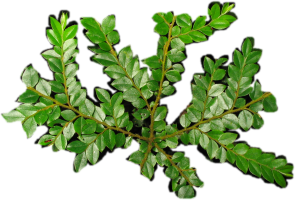

The Phylomatic Project |  |
run it! phylocom webb donoghue |
BackgroundAs part of ongoing research into the phylogenetic structure of plant communities, we (Cam Webb and Michael Donoghue) began assembling published phylogenies into a 'mega-tree' of all the taxa in communities that we are interested in. Now all angiosperm families are included. This tree of trees is not a true supertree (e.g., Sanderson, Purvis and Henze 1998), in that it is being assembled 'by hand,' rather than by an automated supertree algorithm, and conflicting branching patterns are being resolved 'subjectively.' It is, however, intended to represent a good current approximation of the true tree of higher plants (minus reticulations!). This is obviously something of a rough-and-ready process, conducted for pragmatic expediency. To be absolutely clear: *** This a constantly-changing, working hypothesis. Use at your own risk! ***This work complements rather than competes with more comprehensive collections of trees, such as the Tree of Life project, and TreeBASE. As a service to the larger biological community, we are making our mega-trees available as we put them together. We supply online software (Phylomatic) for users to rapidly assemble their own community trees from our mega-tree. The main limitation for users is that the taxa you are interested in must appear in the mega-tree (at genus or family level). You can help us in this growing project by requesting that taxa be added (and suggesting relevant phylogenies). Comments on the website and on the process are valued. Mega-tree construction rulesSince Peter Stevens has put his (dynamic) hypothesis for the phylogenetic relationship among the APG orders (on APweb), we have been using this as the backbone of our mega-tree, and are extremely grateful for his effort. We had previously been compiling our tree from the most recent 'whole angiosperm' study, e.g. Soltis et al. (2000). Peter has extensively documented his sources for tree construction down to the family level. Our 'resolved' trees (name prefixed by 'R') use the complete resolution that Peter has decided on on APweb. Our 'conservative' trees (name prefixed by 'C') remove any branches that Peter has annotated as having bootstrap support less that 80%, or when a whole tree is indicated as having 'weak support.' To the APweb tree, we are adding family-level phylogenies from published studies. Our method for deciding which tree to include is:
The Current megatreesBecause the tree has grown so large, I am maintaining it as a series of plain text newick files. The current compiled trees are: The Davies et al treeThanks again to Jonathan for sharing this. See Davies et al. (2004) for info on branch support. A number of terminals in the paper were composites of several families, and I substituted these families in as monophyletic polytomies in the consensus tree, but collapsed them back to the last node in the dated tree. Note that the branch lengths from the terminals (family names) represent MAXIMUM ages for those clades - use with care!Megatree archivesWe intend to make all significant revisions of the tree available. Thus users can cite the tree version number in publications:
PhylomaticThe online software takes your list of taxa, and first tries to match them by genus name to the megatree. Failing that, they are attached by family name. If all the genera appear in the megatree, then that family appears resolved. If even one genus is missing from the megatree, the returned phylogeny portrays a polytomy of genera. Currently, species are not included in the megatree, and species within a genus are always returned as polytomies. 'To do' list
BibliographyAPweb contains an enormous and up-to-date bibliography. Additional articles and sources used in the construction of the phylomatic R and C trees can be found here. Last revised: $Date: 2005/01/06 01:18:11 $ |